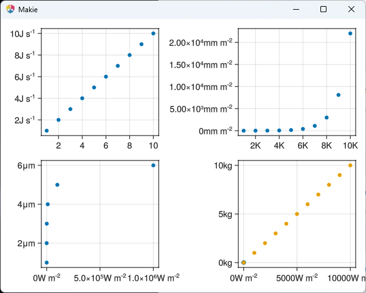

Makie v0.21.17
Add second example to "boxes around subfigures how-to page"
An additional example has been added to the "boxes around subfigures" how-to page to enhance the documentation.
Don't force triangle mesh in crossbar with notch to avoid CairoMakie artifacts
The code now avoids creating triangle meshes in crossbars with notches to prevent seam artifacts in CairoMakie.
Fix 2D assumption in point-based convert_args for lines
This change removes the 2D assumption, enabling 3D polygons to be plotted via
lines and
scatter functions.
Fix Axis3 frameline z-sorting in CairoMakie
Corrects the z-sorting for Axis3 framelines in CairoMakie by adjusting translations specifically for CairoMakie.
Add an example of using jupyter-server-proxy with WGLMakie
An example demonstrating the use of jupyter-server-proxy with WGLMakie has been added to the documentation.
Prevent more default actions when canvas has focus
The update stops certain default actions when the canvas is in focus, addressing issues such as losing focus when arrow keys are pressed.
Improve performance of project linepoints
Significantly improved the performance of the
project_line_points function in CairoMakie, reducing allocation and execution time.
Fix uint16 overflow for over ~65k elements in picking
The picking functionality now correctly handles cases with more than 65,000 elements by fixing a uint16 overflow issue.
Add informative error if invalid side is used for violin
Adds an error message clarification when an invalid side is specified for a violin plot, avoiding silent fallbacks to default values.
Fix RPRMakie EnvironmentLight orientation
The orientation of the EnvironmentLight in RPRMakie has been corrected for better accuracy and usability.
Fix incorrect comparison in CairoMakie line projections
Addresses an issue in CairoMakie where an incorrect comparison in line projections caused rendering problems.
Fix colorbuffer(axis) for px perunit
This change addresses an unspecified issue related to
colorbuffer and
px_per_unit.
Fix misaligned colors in colorbar
Adjustments have been made to ensure colorbars built from contour plots are aligned correctly, preventing miscoloration.
Fix CairoMakie heatmap offsets
Corrects the offset of heatmap cells in CairoMakie by adjusting pixel padding, closing gaps, and improving cell alignment.
Add kwarg to rotate Toggle
Introduces the
orientation keyword argument for the
Toggle widget to allow rotation of the toggle in radians.
Only use automatic unit conversion for simple units (not compound units)
Automatic unit conversion is restricted to simple units, leaving compound units unchanged to ensure accuracy. 
Maximum auto ticklabelspace
Implemented an
:max_auto for tick label space in Axis and Colorbar, to always just grow the tick space, which reduces jitter.
Show a "Did you mean:" suggestion for thrown InvalidAttributeErrors via levenshtein distance
This change introduces suggestions for InvalidAttributeErrors using Levenshtein distance for possible typos.
Add linkaxes to S.GridLayout and make sure limits don't reset for axis links
Introduces
xaxislinks and
yaxislinks to
S.GridLayout and maintain zoom states when axes are swapped.